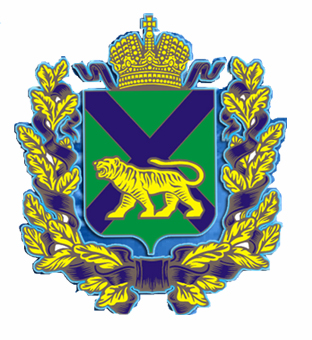
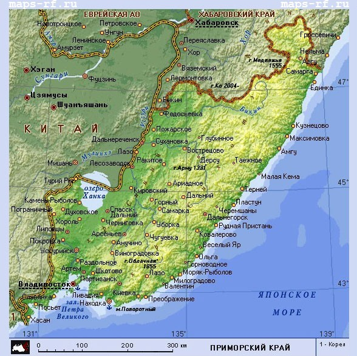

История Приморского края
Территория Приморья, являющаяся южной частью Дальневосточного региона России (до революции обозначалась географами как Южно-Уссурийский край), была включена в состав Российского государства на основе Айгуньского (1858) и Пекинского (1860) договоров, юридически оформивших границы между Россией и Китаем. В административном отношении край стал частью Приморской области, образованной в 1856 г. и входившей в состав Восточно-Сибирского, а с1884 г. – Приамурского генерал-губернаторства. Как и другие дальневосточные территории, Уссурийский край был очень слабо заселен: в 1861 г. в нем насчитывалось менее 20 тысяч человек.
Для полного ознакомления с историей Приморского края пройти по ссылке Приморский край

